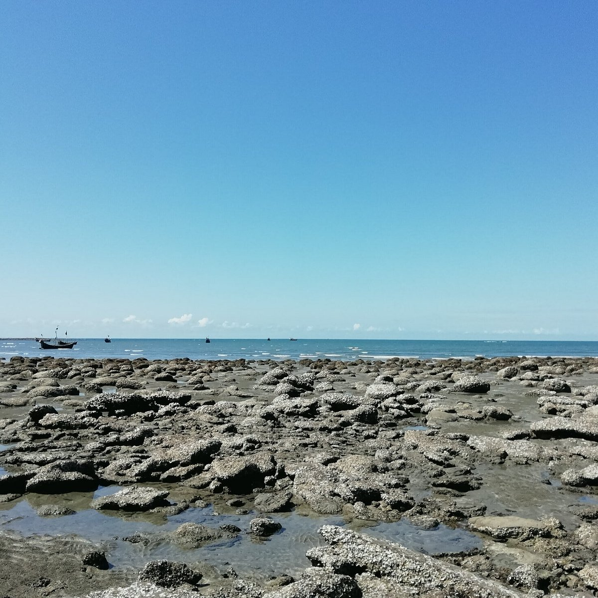

Top Tourist Attractions
Saint Martin's Beach

The main attraction of the island, known for its white sandy beaches and crystal-clear water, perfect for sunbathing and swimming.
Coral Reef

Explore the vibrant coral reefs that surround the island. A snorkeling paradise for marine life enthusiasts.
Visit the Fishermen's Village

Experience the local culture by visiting the traditional fishermen's village, where you can observe the daily lives of the island’s inhabitants.
Patharghata

Explore the rocky areas of Patharghata, where you can enjoy beautiful views of the sea and the surrounding landscape.
Chhera Dwip

A small, tranquil island near Saint Martin's, known for its serene environment and stunning sunset views.
Marine Life Watching

Engage in marine life watching, where you can spot various species of fish, turtles, and other marine creatures.